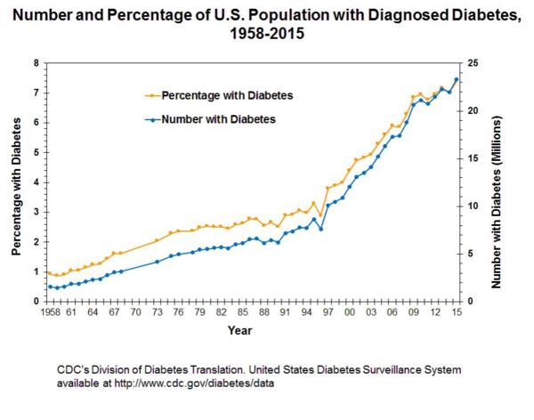
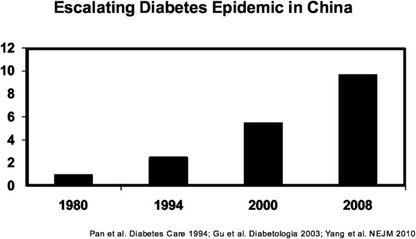

【公共健康】【財政】一個嚴重的公共健康問題
2019-12-27 00:59:00
原文网址：https://blog.udn.com/MengyuanWang/131394982
在1970年代，肥胖症以及它所帶來的心血管疾病（Cardiovascular Disease，CVD）和代謝症候群（Metabolic Syndrome，包括糖尿病、高血壓、高脂血症、非酒精性脂肪肝和多囊卵巢綜合症等等）開始成爲美國公共健康的頭號問題。當時的代謝理論假設“一卡路里就是一卡路里”，與養分的類別無關，而每單位脂肪的熱量比澱粉和蛋白質高出一倍有餘，所以學術界認爲肥胖症係由攝取過多脂肪而導致，再加上心臟病顯然與脂肪代謝鏈中的膽固醇（LDL，Low-Density Lipoprotein）有密切關聯，於是在1982年，美國農業部（USDA）與美國心臟協會（American Heart Association，AHA）和美國醫學會（American Medical Association，AMA）聯合具名發佈了新的飲食指導方針，要求美國民衆把脂肪佔總攝取熱量的百分比從40%降到30%，隨後市場上出現了成千上萬的低脂食品，不到20年這個目標就達成了。

然而，雖然心臟病的死亡率受到控制，肥胖症本身（見下圖）以及代謝症候群的增長速度反而加快了。上圖是CDC（Center for Disease Control And Prevention，美國疾病管制與預防中心）所統計的糖尿病確診人數（藍綫）和佔總人口比例（橙綫）。在1982年，確診的糖尿病患只占人口的2.6%，到了2015年已經增長到7.2%。

這張圖是超重（Overweight）佔總人口百分比的演化曲綫；可以看出美國固然引領潮流，但是肥胖症其實已經成爲一個全球性的流行病（Epidemic），而且飲食文化越接近美國的，超重比例就越高。
爲什麽美國的肥胖人口在減少脂肪攝取量的同時，反而快速增加？過去40年，美國人的平均攝取熱量的確也不斷增長，但是美國在二戰後的食品一直很豐裕，爲什麽到了1980年之後才胃口大開，越吃越多？在2006年發表在《Obesity》期刊的一份研究報告，發現連嬰兒在六個月大就已經有超重的趨勢，那麽現代的嬰兒食品比以往多出了什麽成分？
研究代謝學（Metabolism）的學者回頭去檢驗“一卡路里就是一卡路里”的假設，發現它大致是正確的，但是有一個例外，就是果糖（Fructose）。
果糖是三種小分子單糖之一；另外兩種分別是葡萄糖（Glucose）和半乳糖（Galactose）。我們食用的碳水化合物主要是澱粉，它是一種多糖，由許多葡萄糖單元串聯而成。蔗糖（Sucrose）則是一種雙糖，由一半果糖和一半葡萄糖結合組成。進入人體消化道之後，澱粉和蔗糖都會迅速分解為單糖成分，然後被腸道吸收。葡萄糖是所有人體細胞都愛用的能量來源，只有20%會被送到肝臟轉化為肝糖（Glycogen），以備不時之需。果糖卻沒有任何直接用途，100%必須由肝臟當作毒素一樣來降解（這個比例甚至高於乙醇酒精所對應的80%），一部分被轉化為檸檬酸離子（Citrate），然後經由血液被送到人體脂肪細胞内進行De Novo Lipogenesis（自身脂肪合成，指人體代謝系統將其他分子轉化合成為脂肪的過程），另一部分成爲尿酸（Uric Acid），還有一些淪爲促生心血管疾病的LDL以及自由脂肪酸（Free Fatty Acid，FFA），後者也就是血脂和肝脂肪的來源。
爲什麽人類的代謝系統會演化出對一種常見的養分如此特別的待遇呢？我在《猿類的起源》一文討論過，大型靈長類（亦即人猿總科，Great Apes）原本是2600萬年前在東非演化出來；2100萬年前非洲板塊與歐亞大陸連通，人猿進入西亞和南歐；1700萬年前，地球氣候變冷，出現季節性的食物缺乏，於是必須在秋天養膘，纍積體脂肪。水果是人猿在秋天的主食，富含果糖，於是人猿演化出盡量把果糖轉化為體脂肪的代謝通路，而且還失去了降解尿酸的能力，這是因爲尿酸有觸發這些增肥機制的作用，所以它所帶來的痛風（Gout）和高血壓（Hypertension）等副作用也只能被容忍。後來這支人猿返回非洲，成爲猩猩和人類的祖先，我們也就繼承了這個養膘回路。不但如此，我們舌頭的味覺感受器也因此對果糖情有獨鍾，它的甜度是蔗糖的173%，葡萄糖的兩倍半。
正因爲人體一遇到果糖就只想增肥，所以它不但不能被用作細胞的燃料，而且不會像其他養分那樣抑制胃飢餓素（Ghrelin，刺激食欲的荷爾蒙），也不像葡萄糖那樣會觸發胰島素（Insulin，控制血糖的荷爾蒙，也有抑制食欲的作用），大量的果糖甚至還會引發下視丘（Hypothalamus）對瘦素（Leptin，產生飽腹感的荷爾蒙）以及肌肉細胞對胰島素的抵抗（Resistance），前者使食量永久性地增大，後者則妨礙肌肉燃燒葡萄糖的過程，使部分葡萄糖也被轉化為體脂肪，使增肥更爲高效。
原本美國人所攝取的果糖主要來自水果，分量有限（每天20克以下），而且混合了很有益的纖維和維生素，對身體健康的整體影響是正面的。但是在1966年，一位日本生化學家發明了可以把玉米澱粉轉化為果糖的酵素，美國在1970年代引進了這個技術，開始工業化大量生產高果糖玉米糖漿（High Fructose Corn Syrup，HFCS）。玉米糖漿的價錢只有蔗糖的1/2甚至1/3，於是很快地奪取市場額分，並且使得加工食品（Processed Food）製造商非常樂意對飲料和食品大量添加甜味。剛好在1982年之後，他們必須減低加工食品中的脂肪含量，爲了補償適口性（Palatability），最便宜、最簡單、最有效的方法就是添加玉米糖漿，於是美國人所攝取的果糖分量直綫上升，1994年達到每人每日55克，2008年達到73克，其中大約一半來自冷飲（36.5克果糖，相當於20oz的汽水），例如可口可樂零售版本（亦即罐裝或瓶裝）的熱量基本全部來自HFCS-55（含55%果糖的玉米糖漿），而快餐店的飲料機則使用更甜的HFCS-65（含65%果糖的玉米糖漿）。
先前提到的那些對果糖代謝過程的研究，一直受到來自既得利益者的反對和干擾，他們尤其喜歡大批購買學術論文來製造對自己有利的“證據”（參見https://www.latimes.com/science/sciencenow/la-sci-sn-sugary-drink-research-20161031-story.html ）。如同烟草業駁斥吸烟對呼吸道的影響，以及石油業資助對二氧化碳排放引發全球暖化的質疑（參見前文《科學界的賣淫者》），美國飲料協會（American Beverage Association，原名National Soft Drink Association）和玉米精煉協會（Corn Refiners Association）不斷地引用自己資助的研究來否認果糖與肥胖症之間的關係。世界衛生組織在2003年長達214頁的報告中弱弱地加了一句“建議考慮限制含糖飲料的攝取量”之後，一個美國飲料協會的研究員就急忙出面疾呼，說糖是碳水化合物，不是脂肪，所以已知有利於減肥（參見https://www.ncbi.nlm.nih.gov/pmc/articles/PMC1125412/ ）。
但是到了2010年，即使有了來自數以百計可疑論文所帶來的噪音，加工食品和冷飲中所含的果糖是肥胖症和代謝症候群的主因也已經成爲學術界的共識，這些疾病（尤其是糖尿病）的爆炸性增長帶給有良心的學者强烈的急迫感，於是在2010年三月號的《Archives of Internal Medicine》出現一篇專門研究對含糖冷飲徵收營業稅的論文，發現在美國市場抽18%的冷飲稅，能為人口平均減重2公斤。隨後有好幾個後續的研究也得到類似的結論。
頭一個采納這個建議的，是遠在歐洲的匈牙利：號稱自己是“Illiberal Democracy 非放任性民主”的Viktor Orban重新掌權不久，就在2011年開徵冷飲稅。和美國並列為肥胖症重災區的墨西哥，在2013年跟進。美國國内最早的冷飲稅在2014年底通過加州Berkeley的市議會，至今共有9個城市徵收。如果放眼全世界，則共有19個國家已經立法加徵冷飲稅。除了飲食文化類似美國的英澳等國之外，另一個急著施行冷飲稅的集團是西亞和南亞的穆斯林國家，包括沙特（Saudi）、阿聯（UAE）和馬來西亞，他們由於氣候炎熱，而且宗教禁酒，所以人均冷飲消費量冠絕全球；巧合的是，他們也正承受著世界上最嚴重、最普遍的糖尿病疫情。

東亞國家的肥胖症還遠遠沒有到像美國和墨西哥的普及程度，照理說糖尿病也應該比較輕微。但是種族（Race）之間的代謝功能有差異：黃種人相對不容易增肥，但是對糖尿病卻很易感。上圖是中國的糖尿病患者佔人口百分比的演進歷史，可以看出在2008年就逼近10%，已經高於美國在2015年的比例。
這裏我列舉更新、更詳細的資料來對比中美兩國的糖尿病疫情：根據CDC在2015年的統計數字（參見https://www.cdc.gov/media/releases/2017/p0718-diabetes-report.html ），美國共有3030萬糖尿病患，佔總人口的9.4%，其中2310萬人（總人口的7.2%）已被確診，另外720萬人（2.2%）還沒有就醫診斷；此外還有8410萬名成年人處於糖尿病前期（Prediabetes），佔成年人口的34%。中國醫學界在2013年做了全國性的統計，結論發表在《JAMA》（《The Journal of American Medical Association》《美國醫學會期刊》，參見https://www.sciencedaily.com/releases/2017/06/170627134326.htm ）上；發現中國的糖尿病患佔總人口的10.9%，其中4.0%為確診，6.9%為帶病未診；糖尿病前期則佔人口的35.7%。
CDC計算糖尿病對美國經濟的負面影響是每年3270億美元，其中包含了醫療費用和工時損失。我沒有找到中國的對應數據，所以自行估計一下：算入人口和GDP的差異，假設比例相似，可以得出每年應爲18840億人民幣。美國的醫藥業佔GDP的18%，幾乎達到中國（6.23%）的3倍，如果假設中國治療糖尿病的費用也因此而又少了近3倍，那麽糖尿病對中國經濟的拖累至少是每年6520億人民幣。
每年六千多億人民幣的損失，一億多人口和他們家人的病痛困擾，還在迅速惡化普及的疫情，使得糖尿病成爲頂尖等級的公共健康議題，嚴重性甚至超過了幾年前的霧霾問題。而對果糖和冷飲徵收營業稅，相對著減低排放來説，實在是輕而易舉還增進稅收的好事。我强烈建議大陸和台灣都對玉米糖漿和含糖冷飲各開徵100%的營業稅。這是一件知難行易的政策；現在學術上的結論已經很清晰，實際政策的可行性也已有許多國家先行驗證，對國家經濟和國民健康又有著極大的影響，我希望藉著這篇文章引發公衆的知情及討論，進一步使國内的專業醫療研究人員能得到媒體的注意，共同發聲，促成正確政策的早日施行。
【後註一】剛剛發現了這個Youtube視頻：https://www.youtube.com/watch?v=B56Gpf1f5_A，感覺它適合介紹非專業讀者瞭解這個話題。
【後註二】今天是2020年二月17日，有在台灣的朋友拿這篇針對糖稅的討論（參見https://www.foodnext.net/news/newstrack/paper/5357400690）來詢問我的意見，我回復如下：
文章以台灣的水準來看，還算不錯的；不是足夠的精確詳盡（尤其是沒有針對果糖做討論），但是面向一般大衆的科普寫得簡單並非壞事。
我想真正需要我評論的，是反對者意見那四個段落；它們基本上是Lying through the teeth（漫天扯謊）。
1）有關英國蘇打稅的研究報告（應該是這一篇）並沒有任何學術性。Nielsen是一家私營的顧問公司，是現代財團的公關打手，基本上誰出錢它就為誰説話；它的報告原本就是要混肴視聽用的。
2）耶魯的2011年論文（應該是這個）是有學術性的。但是這裏反對者只是借了人家的名頭，然後顛倒黑白、無中生有。其實耶魯不可能去研究所謂“1990-2006年美國徵收糖稅”的結果，這是因爲美國第一個抽糖稅的Berkeley是從2015年初才開始。事實上耶魯論文的結論是一點點稅（每盎司一美分）就能降低人均糖水攝取量達24%，每人每日熱量攝取減低200千卡；這是非常支持糖稅的論調。
3）U. Glasgow的2016年論文（應該是這一篇）並沒有說不該徵收糖稅；它説的是，除了糖之外，脂肪和總熱量也必須兼顧。這被那些反對者拿過來，在邏輯上魚目混珠了（參見前文《常見的狡辯術》）。
4）增加食品加工業添加果糖的成本，正是糖稅的用意，怎麽就變成反對的理由了？“可能導致許多人失業“這句話，沒有任何客觀佐證；你看這些既得利益者在前述的討論中撒謊的狠勁，居然在這一點都只能用空洞的詞匯來矇混過關，顯然事實上這個“可能”是必須用最高倍數的電子顯微鏡才看得到的。丹麥的確是在2013年取消了糖水稅（事實上主要是取消了脂肪稅，順便也豁免了蘇打稅，加工食品用糖的稅依然健在），但是其主要的原因是丹麥的國土很小而稅率極高，國民原本就習慣每周開一會兒車到鄰國（亦即瑞典和德國）去買雜貨，順便多買些汽水極爲方便容易。所以這裏的正確教訓，是糖稅最好是全國一起徵收，但是各地有先後是現實，總比不徵的好：一個重要的地區先做示範，不但是地方立法連鎖鏈的起頭，而且即使在丹麥也是有健康效益的（參見這篇2016年的回顧）。
【後註三】今天是2020年六月15日，已經有足夠實驗證明攝食果糖是促使新冠感染轉爲重症的因素之一，這來自果糖的三個作用：1）促成糖尿病（參見正文）；2）增加Oxidative Stress（參見https://www.ncbi.nlm.nih.gov/pmc/articles/PMC5409744/）；3）妨礙維生素D的免疫功效（參見https://pubmed.ncbi.nlm.nih.gov/23571713/）。
【後註四】又有一篇新論文（參見《The carbohydrate-insulin model: a physiological perspective on the obesity pandemic》）試圖打破學術界對肥胖症起源的迷思，值得生醫專業讀者參考。
【後註五，2022/04/21】最近十年有許多新研究，證實Fructose經新陳代謝產生Uric Acid是哺乳類和尤其是大型靈長類增肥的關鍵機制。除了最主要的Fructose（糖、高果糖糖漿）和Uric Acid（蜂蜜）本身之外，一些次要的增肥因子也被發現，尤其是人體能自主轉化Glucose成爲Fructose，所以減肥除了禁糖之外，也不能多吃澱粉，至於促進這個轉化機制（通過Vasopressin的V1b receptor）的鈉離子（鹽、味精）和AMP+Glutamate（味精），則還有引發高血壓的效應，原本就必須酌量食用。
【後註六，2024/08/29】70年代歐美因應節節高升的慢性疾病問題，對社會飲食習慣做檢討的過程中，蔗糖產業游説力量動員得最迅速、最積極、最團結、最徹底，成功地把罪責全部推給高脂肪和高鹽分，使得過去50年全世界都因濫用果糖/蔗糖而導致多種慢性疾病疫情變本加厲，其實過量攝取蔗糖要比過量攝取鹽分容易、普遍得多了。剛剛又看到《Nature》的一篇新論文（參見《Sodium chloride in the tumor microenvironment enhances T cell metabolic fitness and cytotoxicity》），討論氯化鈉的抗癌效應，不由得再次為這個事實與公共認知之間的强烈反差而搖頭。
【後註七，2024/09/12】博客雖然反復强調過果糖攝取過量是當前世界公共健康的嚴重問題，但我似乎一直忘了提起，飲料形式的果糖/蔗糖比糕餅甜點更糟糕得多，這是因爲人類胃/腦之間的飽腹感環路對液態卡路里完全無感（從生物學角度來看，並不奇怪，畢竟在絕大部分演化歷史中，人類不但沒有糖吃，能找到的飲料也只有零卡路里的白水，也就沒有必要演化出偵測果糖/蔗糖溶液的能力），以致越喝飲料反而額外吃得更多（可能是因爲部分原本固態的糖在嘴巴或胃裏溶入飲料中，於是從飽腹感偵測環路中隱形消失），所以營養學界的共識是加糖冷飲可以算是現代飲食中的頭號危害，參見《Why Sugary Drinks May Be the Unhealthiest Food Out There》。
【後註八，2024/09/20】剛剛上了《龍行天下》節目，把果糖的危害又討論了一遍，這次的重點放在糖尿病。我所用的參考文件，主要是中國每五年一次的官方統計，參見《Prevalence and Treatment of Diabetes in China, 2013-2018》。正文中曾經引用2013年的統計結果（10.9%+35.7%=46%），這次2018年的數字在2021 年底發表，所以2023年的結果可能要到2026年才會公佈，綫性預期是糖尿病加前期會從成年人口的50%提高到54%；有興趣的讀者可以去看看第一手資料。
至於其他國家的對比，網絡搜索一般可以簡單得到答案，這裏我只給出其中最重要數據的來源，亦即糖尿病的經濟代價大約為2%的GDP，來自ADA針對2022年美國社會的估算，參見《Economic Costs of Diabetes in the U.S. in 2022》。中國的糖尿病疫情比美國更嚴重一些，所以代價只高不低。
【後註九，2024/11/01】英國在二戰中資源短缺，被迫將許多食材列入配給管制，其中也包括蔗糖。戰後的經濟復蘇緩慢，蔗糖來源的印度又鬧獨立，結果配給制一直到1953年才解除，剛好提供了一個完美的天然實驗，可以用來分析出果糖/蔗糖對幼兒健康的危害（否則科學倫理不可能容許以兒童作爲實驗對象）。昨天《自然》報告了這個分析的結論（參見《Diabetes risk soars for adults who had a sweet tooth as kids》），發現幼兒對果糖毒性的抵抗力特別弱，尤其注意光是胎兒是否承受在吃糖孕婦體内幾個月毒害這一個變數，就影響成年後得糖尿病的機率比為3：2，高血壓則為5：4。
博客討論過戒糖的優先順序最高是冷飲，其次是糕餅甜點，但這並沒有涉及不同群體之間的差別。前述論文再一次驗證了果糖的毒性基本等同酒精的事實；考慮前者的攝取量遠勝後者，我們立刻得到一個重要的衍生結論，亦即社會有必要以輿論壓力强制孕婦戒糖，就如同戒酒一樣。
【後註十，2024/12/27】50年前美國出現心臟病流行潮，蔗糖資本動員最快、最積極，以類似烟草業的手段收買生醫研究員，製造假學術共識，將鍋扔給動物性脂肪，尤其膽固醇。至今測量膽固醇早已成爲每個醫檢的必備過程，中老年人一旦LDL（Low Density Lipoprotein，低密度脂蛋白，俗稱“bad cholesterol”“壞膽固醇”）密度高於平均，基本所有的美國家庭醫生都會開降膽固醇藥，這些降膽固醇藥甚至成爲美國大藥廠的獲利核心。然而在最近十幾年，一系列采用嚴謹統計分析的新研究結果反復證明，早年LDL和心臟病的統計關聯是沒有做好控制的噪音現象，更別提浮面的統計關聯距離因果關係又有十萬八千里；換句話説，降膽固醇藥毫無正面健康價值。所以幾年前當我自己在年度醫檢拿到很高的LDL指數，家庭醫生反射式地想開降膽固醇藥的時候，被我强硬拒絕；爲了安撫醫生，我同意去做Coronary Artery Calcium Test (CAC，冠狀動脈鈣化指數) ，這是決定心臟病/高血壓風險的權威測試，結果果然拿到健康滿分，為科學真相又增加了一個小小例證。
今天看到一篇新論文（參見《Lipoproteins and lipoprotein lipid composition are associated with stages of dysglycemia and subclinical coronary atherosclerosis》），除了又一次證明LDL指數高低與心臟病風險毫無關聯之外，還檢驗了所有其他一綫醫療常用的指標，結果唯一與心臟病風險有明確統計關聯的，恰是HDL（High Density Lipoprotein，俗稱“good cholesterol”“好膽固醇”），只不過這個統計相關是負值，亦即HDL指數越高、心血管就越健康。而且真正對應低心臟病風險的，還不是所有的HDL，而只限於其中超大分子的那部分（“extra large HDL”）。很不幸的，當前一般的驗血只提供籠統的HDL指數，要進一步專注在elHDL上，必須特別安排，我自己的醫檢就沒有包含（其實elHDL的重要性是已知的，但我覺得與其試圖拿新科學知識來教育我的家庭醫生，不如接受她的建議直接升級測CAC，省得還要爭吵，即便成功也削了她的面子）。
上述的醫療常識與這篇博文的相關處，在於後天提升elHDL的生活習慣有兩點：少吃糖和多運動；換句話説，造成心血管阻塞的固然是血液中的脂蛋白，但這些脂蛋白是人體正常運作所需，真正促使它們凝結出來形成異常斑塊（plaque），並不是飲食中的脂肪或膽固醇比率高低，反而主要取決於果糖代謝的連鎖反應，尤其是糖尿病和糖尿病前期；這一個反直覺現象與另一個老年疾病脂肪肝同理。
【後註十一，2025/02/03】雖然博客多年來反復討論蔗糖/果糖的健康危害在上世紀中期被蔗糖業收買學術娼妓甩鍋給脂肪的歷史，一直到有朋友私下詢問，我才想起並沒有明確列舉出處和細節，現在補上。最權威的復盤來自2016年《The Journal of the American Medical Association》《美國醫藥學會期刊》的這篇總結文章：《Sugar Industry and Coronary Heart Disease Research: A Historical Analysis of Internal Industry Documents》，只想看科普的讀者則可以參考《How the Sugar Industry Shifted Blame to Fat》或者《50 Years Ago, Sugar Industry Quietly Paid Scientists To Point Blame At Fat》。至於那些學術娼妓，包含基本所有名校，例如哈佛的Fredrick Stare和Mark Hegsted（參見《Sugar industry secretly paid for favorable Harvard research》），但影響最惡劣的，當屬Ancel Keys和他所主導的《Seven Countries Study》。
【後註十二，2025/03/10】剛剛注意到刊載於《Geroscience》《衰老科學》期刊上的這篇論文（參見《Blood biomarker profiles and exceptional longevity: comparison of centenarians and non-centenarians in a 35-year follow-up of the Swedish AMORIS cohort》），感覺又進一步拓展了正文的論證，所以在此為讀者做個簡單的介紹總結。
論文利用1985-1994年之間瑞典健康普查中的驗血記錄，來與事後存活年限做對照，發現能活到百歲（驗血時是60多歲）的1000多人之最主要特徵，在於當年的血糖、肌酸酐（Creatinine）和尿酸濃度都處於健康的低值。熟悉博客對果糖相關討論的讀者應該記得：血糖濃度高反映的恰是高果糖飲食所導致的糖尿病和糖尿病前期；而尿酸則是肝臟降解果糖的主要代謝廢產物之一，能導致痛風和許多其他病變。至於肌酸酐，其濃度過高是醫學界常用來鑒定腎臟功能有問題的指標，同樣也屬糖尿病和糖尿病前期的症狀。所以這個研究結果，强烈暗示著低果糖攝取很可能是長壽的必要前提。
【後註十三，2025/03/23】果糖攝取過高，是現代社會慢性疾病汎濫的絕對主因，這不止適用於糖尿病、痛風等等與果糖代謝直接相關的病變，連心臟病、中風等等曾經被怪到膽固醇頭上的健康問題，其實也來自果糖代謝，只不過作用較爲間接，研究不易，所以結論來得比糖尿病晚了幾十年，一直到現在，仍然處在進行式。我在【後註十】討論了一篇2024年的論文，今天又看到中國研究團隊發表在《自然》的論文（參見《Sensing ceramides by CYSLTR2 and P2RY6 to aggravate atherosclerosis》），實際上是追溯果糖罪狀的新成果之一，然而其所發的中文公關稿（參見《重大突破，支架手术可能成历史！中国科学家揭开动脉粥样硬化形成的神秘面纱》）寫得非常糟糕，光看標題還以爲是在推翻支架手術，若看内容則毫無邏輯，純屬專業名詞攪拌出來的沙拉，比AI寫的還要更空洞無内涵，卻沒有其文筆流暢的優點；尤其全篇完全未提“果糖”兩字，真正罪無可赦。實際上那項針對Ceramides的研究應該視爲這篇2022年論文（參見《Effects of Isocaloric Fructose Restriction on Ceramide Levels in Children with Obesity and Cardiometabolic Risk: Relation to Hepatic De Novo Lipogenesis and Insulin Sensitivity》）的後續擴展，而整個系列推翻的是膽固醇攝取致病論，把心血管病變的真正源頭回溯到果糖身上。
【後註十四，2025/05/25】這裏是又一篇刊在《自然》的新論文（參見《Dietary fructose enhances tumour growth indirectly via interorgan lipid transfer》），發現果糖除了通過肥胖症和糖尿病間接加劇癌症（參見《The dark face of fructose as a tumor promoter》）之外，其代謝產物（亦即論文標題中所提到的“Lipid”，例如lysophosphatidylcholines）也會從肝臟轉移到癌細胞，從而大幅刺激其成長；換句話説，果糖是至少平方級別的Tumor promoter腫瘤促進劑。
【後註十五，2025/05/30】上個月與一位大陸的朋友電郵聊天，談到我除了嚴格戒糖（盡可能戒除飲食中的果糖和蔗糖，包括天然和外加成分，適量水果是主要例外）之外，是否服用保健品；我推薦了維生素D和Melatonin褪黑素，他有些驚訝，因爲這似乎有點類同中醫教徒亂吃補品和中藥。我跟他解釋，表面上類似，但本質上剛好相反，因爲一個被科學驗證為真、另一個被驗證為假。這裏我用來做取捨的是同樣一套科學方法論下對生醫議題必須采用的嚴格標準，對應著事實與邏輯：（1.邏輯）日常可能攝取不足的成分居然仍舊對健康有重要貢獻，這是很大的矛盾（尤其考慮現代飲食遠遠比以往豐富、廉價），幾百萬年的演化過程理應解決，必須有個符合邏輯的解釋；和（2.事實）必須有大規模（人數>1000）、長時間（>3年）、隨機雙盲實驗由無利益關係的可信學術團隊發表在國際一流期刊，反復明確證實其效果。根據這兩個標準，維生素D和Melatonin是目前已知唯二可能有必要（針對我的生活模式，亦即宅男）額外購買攝取的營養素。
首先，前述的演化考慮基本排除一個飲食均衡的現代人會需要補品、中藥或微營養素的合理性，除非這個微營養素本來就不是來自飲食，而維生素D和Melatonin正符合這個標準：它們原本都應該在日照催化之下由皮下組織自行合成（差別在於紫外綫刺激維生素D的合成機制，而紅外綫則刺激Melatonin），剛好現代白領階級成天待在室内，普遍得不到與人類先祖等量的日光照射，於是自然很可能出現缺乏症。我那個朋友是劍及履及的個性，第二天就上醫院求証，一見面醫生主動說我們正愁沒法好好作廣告讓更多民衆來檢測維生素D缺乏症，然後驗血結果不出所料是維生素D嚴重不足，於是我們就接著聊中國和美國超市中維生素D品牌的對比。
至於可靠雙盲實驗這個標準，維生素D和Melatonin也是輕鬆過關，自幾十年前被證實至今，仍然時常又有一篇重要論文提供新的佐證。事實上今天會想要寫這個後註，正是因爲看到這篇哈佛團隊的新研究結果（參見《Vitamin D3 and marine ω-3 fatty acids supplementation and leukocyte telomere length: 4-year findings from the VITamin D and OmegA-3 TriaL (VITAL) randomized controlled trial》），在對1031位志願者隨機雙盲追蹤四年之後，證明維生素D的確能夠延緩細胞老化（以Telomere端粒縮減程度為量尺），而一同被實驗的Omega-3脂肪酸則在統計上無效，偏偏後者的名氣更大、服用者更多，再次可見人云亦云不是尋找科學真相的正確途徑。當然，維生素D的健康效益很多，例如這篇三年前的論文（參見《Vitamin D and marine omega 3 fatty acid supplementation and incident autoimmune disease: VITAL randomized controlled trial》）又是對比維生素D和Omega-3脂肪酸，只不過目標是緩解Autoimmune Diseases自體免疫疾病，結果發現兩者都有些許效用，但維生素D更明顯些。Melatonin的健康效益主要在於治療失眠和增進免疫抵抗力，實驗證據同樣豐富而久遠，有興趣的讀者請自行搜索專業期刊，我就不在此贅述了。
【後註十六，2025/06/11】感覺上最近每一期的《自然》如果不刊登一篇討論果糖危害的新論文，就不完整了。最新的樣本是《Early life high fructose impairs microglial phagocytosis and neurodevelopment》，詳細探究了孕婦攝取果糖導致胎兒腦細胞（Microglia）失常，長大之後產生心理障礙病變的機制。
【後註十七，2025/06/19】正文裏引用了2008-2013年的中國糖尿病統計數據，【後註八】則討論2013-2018年的資料，並觀察前例、預期2018-2023年的統計會在2026年發表，不過本月有根據同一套官方資料的論文預先透露了結果（參見《The national and provincial prevalence and non-fatal burdens of diabetes in China from 2005 to 2023 with projections of prevalence to 2050》），證實了多年前所預料的持續惡化。2023年全中國有2.33億糖尿病患（不含糖尿病前期），壽命曲綫標準化等效人口比率（Age Standardized Rate，ASR，一般用於與年齡强烈相關的疾病統計，亦即為排除人口高齡化程度的影響，先將人口壽命曲綫轉化為全球平均值所得的結果，在高齡化嚴重的中國，原始比率更高，為2.33/14=16.6%）為13.7%，並以每年400多萬人的速率加速增高中。
為了估算事態的嚴重性，我想把前述數據換算為Excess Mortality超額死亡率（請注意，我們不能天真地只看死因統計數字；讀過新冠系列博文的讀者應該記得，死亡證明書上的原因欄原本就出了名的不可靠，這裏正因糖尿病引發的二級並發症特別多，更不能只凴急診室醫生看一眼尸體而填寫的浮面死因來決定死亡是否與糖尿病有因果關係），所以又找到下面這篇以英國為對象的研究報告（參見《Mortality Rate Associated with Diabetes: Outcomes From a General Practice Level Analysis in England Using the Royal College of General Practitioners (RCGP) Database Indicate Stability Over a 15 Year Period》）。英國的高齡化程度約與中國相當，但糖尿病ASR患病率只有6.4%，不及中方的一半，而這篇論文總結2019年因糖尿病而導致的超額死亡人數為4萬人，佔總人口6700萬的萬分之5.97。因而我估計中國在2023年因糖尿病而致使的超額死亡人數為1400000000*（5.97/10000）*（13.7%/6.4%）=180萬人，這個數字以年增率約2%依指數率遞增。
38 条留言
果糖價格大幅下降 + 脂肪添加量減少 =》 加工食品的果糖添加量顯著增加 =》上中產階級希望避免越來越不健康的加工食品 =》“有機”食品崛起 =》貧富階級的健康差異增大 =》美國精英階級更加不願意改革醫保，負擔下層階級的醫療費用 =》代謝疾病的治療費用上升率特別高
你記得最近有些新聞，說美國的胰島素價格上升了幾十倍，以致很多沒有健保的糖尿病患者死亡嗎？仔細想想背後的因果關係。
減糖應從教育着手
這些道理，你雖然不懂，對我來説，不但是簡單至極的邏輯結論，而且已經公開討論過。强迫我反復敘述1+1=2，是非常不禮貌的。
终端产品的抽税确实很难，软饮料企业大多是地方政府的财源（软饮料市场非常碎片化，前12强仅仅占有47%的市场，可口可乐排名第二仅占5-7%），而软饮料本身又是大部分群众的消费品，预计会遇到很大的反对声音。如果讨论征税仅仅仅针对工业原料的果葡糖浆（这个是在大陆的广泛译名）的话，应该可以获得更大范围的共识，其实在2019年上半年国内就已经有一些声音开始声讨果糖了。
我这里还有一个关于蔗糖和果葡糖浆对比的问题。您之前提到蔗糖是一个双糖，也就是一个果糖+一个葡萄糖；而用于饮料HFCS 55根据维基的介绍是脱水后含有55%的果糖，其他的大部分是葡萄糖。果糖和葡萄糖单分子质量差距不大，只有11%左右。按照这样算，即使使用蔗糖全面替代现有的果葡糖浆，也仅仅只能降低6-17%的果糖摄取量。果真如此的话，蔗糖是否也需要被纳入征税的考虑？
至於把美國玉米糖漿的市場額分轉移到巴西蔗糖上，當然不見得對代謝疾病有幫助，這只是國際市場經濟供需的考慮，所以我在正文裏沒有討論。
冷飲的問題則在於它的攝取太容易了，尤其是在快餐店，不知不覺已經喝了300卡路里和30克的果糖；更糟糕的是果糖並不產生飽腹感，可樂裏的咖啡因反而讓你越喝越渴、越喝越餓。這是爲什麽美國人在過去40年，平均每頓飯攝取熱量不斷上升的主因；這一點我在正文裏暗示了，或許沒有說得特別清楚。
近几年专业营养学研究和大众舆论都开始强调高糖食物对健康的损害，并鼓励健康脂肪的摄入。从这个角度看推行这个法案是有一定民意和舆论基础的。不过中国立法过程，特别是对于这些看似并不迫在眉睫的问题反应较为迟钝，恐怕短期看不到改变。
另外我猜测这个惩罚性税收的分配方式，是收归中央还是给厂家所在地方政府，会成为一个关键。
正文裏討論的不能吃糖（因爲要完全避免果糖）只是第零級的重點，再下一步的第一級常識是長肌和減肥必須兼顧（因爲運動和肌肉是促進代謝作用的主動力），卻又不能同時進行。這是因爲肌肉必須有胰島素才會增長，但是胰島素也會同時刺激脂肪細胞的增肥。所以必須以兩個月為周期，做長肌和減肥的交互輪替。長肌階段是偏重蛋白質的半均衡飲食，熱量攝取高於平衡值，減肥階段則是以脂肪爲主（！！！！！這叫做Ketogenic Diet，其原理是誘發體内燃燒脂肪來提供能量的代謝回路，這樣才能强迫脂肪細胞釋放儲存的脂肪），輔以蛋白質，完全杜絕碳水化合物（沒有葡萄糖，就沒有胰島素），並且把熱量攝取降低於平衡值。當然，運動是不能間斷的，卡路里的總攝取量也必須精確。
對認真的人來説，減肥比長肌要容易多了。搞健美的人，爲了突破人體天然不喜歡長肌肉的趨勢，只好大量使用類固醇；網絡上的肌肉男和演超級英雄的電影明星，都不例外。
取消一胎政策，晚了十年，後果很嚴重。我不希望十年後，又在糖尿病的問題上，有類似的追悔，所以才急著現在就提出這個話題。
至於你提的稅收歸中央還是地方的問題，這不是我能置喙的，但是可以預見會有廠商逃稅，所以什麽樣的規則最方便執行監管，就是最好的選擇。
我憂慮這道理也可能適用於政府官員，即解決已發生或惡化的慢性社會問題，比預防此問題發生更能突顯政績，更能帶給人民正面的感受。一個能預見問題也能解決問題的官員，有動機選擇等問題發生或惡化時再處理，而非事先預防，以此獲得政績及民心，但付出更大的社會成本 (看觀網上留言就知道，比起徵果糖稅，許多人更推崇開發糖尿病藥)。 我認為解決辦法只能依賴上層官員的無私及遠見，在考核下層官員成績時，更看重有效的預防性施政。
我在正文最後一段所説的，中共有不撒謊的政策，指的也是中央，尤其是對外的宣言；這是和美國的對比。地方政府良莠不齊，越是下層，撒謊的必然越多。
https://timesofindia.indiatimes.com/life-style/health-fitness/diet/20-foods-to-keep-your-uric-acid-at-normal-levels/articleshow/20585546.cms
至於純蛋白質或純脂肪飲食，就有不小的風險，主要是HDL和LDL可能會失衡。我自己並不夢想成爲肌肉男，又不願意餓肚子難過，更喜歡紅肉和培根，所以並沒有進行長肌和減肥的交替周期，只是控制總熱量攝取，六個月下來，精神好多了。
別忘了蛋白質，最新的研究顯示每頓飯必須有至少20克，否則會喪失肌肉質量，所以可以買蛋白質粉（一般是乳清蛋白，Whey Protein），如果一頓飯主要是澱粉，就加泡一杯蛋白質輔佐。
王老师好，我最近用低碳饮食+高脂饮料瘦了7公斤。因为瘦的太快+脚有两次抽筋的现象，让我对低碳饮食有点儿疑虑，查到的资料基本是这种食谱对癫痫儿童和糖尿病患者的正面评价，但没有对健康人的资料，我非常认同您控糖的建议，也想请教您对健康人低碳饮食控制体重的看法
葡萄糖是人體所有細胞的主要能源，攝食嚴重不足，固然會強迫造成脂肪的新陳代謝，也會引發一連串其它的緊急反應，其中很多是不健康的。此外，高脂肪飲食必然也代表高膽固醇，這對心血管健康很不利。
我的建議是均衡的飲食，只戒絕果糖和蔗糖，並注重每餐攝取足夠的蛋白質（20克），然後以總熱量來控制體重。另一個需要注意之處是不要心急，體重暴漲暴跌不論背後的原因何在，本身就不是健康的事。建立健康的飲食作息習慣、持之以恆，才是正確的養生之道。
关于社会健康问题目前我无法写出学术上文章，我就叨叙一些我的个人经历和观点，如果不合适，王博去除即可。
关于肥胖
我继承了我母亲的易胖体质，想减肥，但忍不住看到食物就想吃的冲动和饿了就会烦闷的情绪。我不知道从哪里看到，人的饥饿感是血糖浓度低导致（而不是真的的胃空了），所以对抗饥饿感的方法有两种：一是立即吃升血糖的食物；二是立即无氧运动（例如快速跳绳100次）让身体进入运动模式。虽然很早就知道了这个理论，不过目前在我身上并没有好的成效，也许是我并没有彻底贯彻的缘故。
关于失眠。
我不知是在微博还是这里看到王博说常有睡眠问题。我也自小就有，中学住校的时候经常1、2点还睡不着只能去厕所借灯看书。现在工作以后失眠成了我的大问题，缺乏睡眠导致抑郁。 我目前在长期服用治疗抑郁药物，还把工作辞了来海南冲浪和养生已逾半年。目前睡眠时长足够了，但是睡眠质量依旧不高，记忆力和灵敏度没有恢复，也没有动力提升职业技能。也不知何时才能再次进入工作状态。
关于人生态度
这段时间里，我每天像个坏学生一样，不再参与社会贡献，也被排除在社会评价体系之外。虽然我有抑郁症，但我却越来越乐观，因为王博的文章重塑了我的社会认知和人生态度：以前我认为我国内卷化太严重；认为社会混沌如此，个人很难找到最优解；认为生命除了攀比运气，毫无意义。现在我变了，我觉得我应该为社会主义之崛起而努力，就算我失败了，这个主义也不会抛弃我。也许这就是文明的温情吧。
抑鬱症並不讓患者悲觀，剛好相反，是一般正常人有很强的盲目樂觀和盲從獸群心態，抑鬱症病人只不過是對未來和世界的認知沒有偏頗罷了；這個事實，早就被無數的心理學實驗確認過。問題在於，人也是演化過程的偶然結果，人生並沒有什麽天然的神聖意義，一旦剝除了非理性的盲目樂觀或宗教迷信，自然只能在Hedonism、Nihilism和Cynicism中選擇一個。這裏的關鍵，在於不要問“Why？”，而是該問“Why not?”那麽就容易得到正面的人生觀。
一位台湾朋友的留言：“最後一段的觀點太顛覆了 小編可以請老王多說點嗎？”
我所指的，是心理學裏的一系列叫做“Illusory Superiority”的實驗，也就是用問卷來調查群衆對自己能力的評估。最早的知名結果來自1977年Patricia Cross（參見https://onlinelibrary.wiley.com/doi/abs/10.1002/he.36919771703）詢問一批大學教授他們的智商是否高於同儕的平均，94%回答是的。後來有人對一家大型軟件公司的程序員發問卷，說你是否屬於最強的5%，結果有32%給出肯定的正面回答。這個現象在各式各樣的行業和群體中不斷被複製（我一直懷疑這和文化有關聯：大部分的論文來自美國，印度的調查結果應該很有趣），唯一的例外是抑鬱症病患，大約只有50%認爲自己强於平均。
至於更廣義的世界觀和人生觀，心理學有Optimism/Pessimism Bias樂觀/悲觀偏見的定義，對抑鬱症的輕重程度也有定量的評分方法（叫做Beck Depression Inventory）。前者對後者的函數，顯示一般人有樂觀偏見，嚴重的抑鬱症患者有悲觀偏見，但是中輕度患者才是無偏見的理性客觀平衡（參見例如https://www.sciencedirect.com/science/article/pii/S0960982211011912）。科學家已經追查正常人樂觀偏見的來源為amygdala杏仁體，而抑鬱症的主要生理機制就包括了抑制甚至縮小杏仁體（參見https://www.nature.com/articles/nature06280；目前對抑鬱症的機制還沒有徹底的瞭解，一般看法是長期焦慮使腦化學尤其Serotonin失去平衡，進一步促使部分腦結構出現不可逆的轉化，包括杏仁體）。
抑鬱症對生活品質、人際關係和生理健康都有很不好的影響。我並不是說這些患者才是正常的，而是人類因演化自然有樂觀偏見，抑鬱症所帶的悲觀趨勢（亦即不是Bipolar躁鬱症），可以與之對消，給出更精確持平的預估能力。當然極爲嚴重的病患（尤其是有强烈自殺傾向的），已經完全壓倒的樂觀本能，落入悲觀偏見的範疇。現有的SSRI系列藥物效果不錯，讀者如果受抑鬱症所困，千萬不要諱疾忌醫，除了吃藥之外，經常運動（產生Dopamine）和情緒管控都有助益。
感谢王先生恩泽社会的科普，根据早些年的官方报告(http://www.moe.gov.cn/srcsite/A17/moe_943/moe_947/201108/t20110829_124202.html)，糖对青少年的肥胖和龋齿问题都有极大的危害；而另一个较为严重的普世性健康问题则是青少年的用眼健康。十年前大学生的近视率就已经高达84.14%。
王先生能否分享一下关于近视眼的见解，因为同样的是充斥很多谎话和利益扎根的领域。我有些问题十分好奇：
1. 王先生觉得东亚相比其他欧美近视眼患病率高的原因是什么
2. 当前的的各类近视手术是否也是因为利益扎根，但实则风险较高的(比如飞秒切角膜，ICL晶体植入等)
3. 王先生对用眼健康和是否做近视手术有没有建议
我並沒有說必須在Hedonism、Nihilism和Cynicism三選一；儒家積極入世、以天下興亡為己任的哲學，是從“Why not”出發可以簡單達到的結論。
1）必須終生服用；一旦停用，肥肉又會長回來。
2）GLP-1是控制胰島素在内的上游激素；胰島素的作用甚爲複雜，去搗亂基本可以預先確定會有副作用。
3）戒糖的減肥效果相當，而且果糖不止增肥，還有其他一系列的毒性效應（例如抑制所有細胞綫粒體），GLP-1 Agonist無法解決。
目前是一批Celebrity先自願做白老鼠，可以預見未來幾年必然會有類似當年“Prozac Nation”的風潮；但30多年下來，醫學界才剛剛發現這些SSRI只對少數人有效，而且副作用大於預期，不是嗎？
你是這個專業的嗎？爲什麽不知道如此重要的新結果？或者我誤解了那個研究？請詳細解釋。
想了想，應該把我所知的一些相關資訊列舉出來。如果我對其有所誤解，請賜教。
1）科普文章《https://www.economist.com/science-and-technology/2022/10/19/how-to-make-better-use-of-antidepressants》
2）數百篇質疑SSRI的論文列表《https://www.survivingantidepressants.org/forum/16-from-journals-and-scientific-sources/》
3）去年新發的兩篇重磅論文，含Umbrella Study《https://www.nature.com/articles/s41380-022-01661-0》和驚動英國輿論的《https://www.bmj.com/content/377/bmj.o1362》
我對就事論事向來不排斥，不過你先是違反《讀者須知》第八條，這是自動禁言一個月，然後又爲了硬拗寫了長篇大論，進一步浪費我的時間，必須追加一個月。如果你沒有足夠自制力的話，可以再次發言，我不介意幫你拉黑。
不過把對理性的堅持，也描述成“Cult”“迷信”，就純粹是狡辯術的顛倒黑白了。迷信之所以是迷信，不在於堅持，而在於沒有事實邏輯的根基。因而真正的科學精神，先天就是宗教的反義詞；這是爲什麽我在形容假大空、僞科學詐騙的時候，特別不用“科學教”這個Oxymoron，而是“科技教”的考慮。
嘿~說不過理，人身攻擊都出來了，還醫生呢，說好的視病猶親，你怎麼儘在傷口撒鹽呢。王博已經很客氣的指出，你思考邏輯的漏洞，Nature那篇報告很清楚的表述血清素主要研究報告沒有提供一致的證據表明血清素與抑鬱症之間存在關聯，也不支持抑鬱症是由血清素活性或濃度降低引起的假設。這麼大型的研究報告，你完全視事實而不見，像個小孩一樣撒潑，還是離開這片理性討論的園地，還給大家一個清靜吧。
另外，捐錢不代表你可以攻擊人或多了不起，請自重。
至於爲什麽有自信的低於一半，可能與問卷來自課堂上的老師有關；如果是家長或第三者私下做調查，結果應該會更接近50%、
路透社两名“知情人士”，阿斯巴甜（aspartame）“可能”被列为致癌物。
又是“知情人士”，又是“可能”的，总觉得这文毫无价值，不知王老师你怎么看。
再说，王老师你觉得这些甜味剂对于减少糖带来的公共健康危害有什么看法吗？
https://www.reuters.com/business/healthcare-pharmaceuticals/whos-cancer-research-agency-say-aspartame-sweetener-possible-carcinogen-sources-2023-06-29/
不過話説回來，以商人的尿性，一旦官方認證代糖比真糖健康，很可能前者要大幅漲價，美國已經如此。
今年两会丢出来的一个与本文相关的方案。以下是用deepseek的总结：
### **一、总体目标**
自2024年起，通过三年行动（2024-2026年），实现以下目标：
1. **支持性环境广泛建立**：推动全社会形成健康体重管理的基础设施和制度保障。
2. **全民健康意识提升**：提高居民对体重管理的科学认知和技能，普及健康生活方式。
3. **重点人群改善**：针对超重、肥胖人群及全生命周期不同阶段群体，改善体重异常状况。
### **二、核心措施**
#### **（一）科学普及与宣传倡导**
1. **权威指导**：编制体重管理核心知识、指导原则，优化肥胖防治标准，开发居民适用的管理工具（如APP）。
2. **创新科普形式**：通过“八进”（家庭、社区、学校等）扩大覆盖，结合重要时间节点（如全民营养周、全民健身日）开展主题活动。
3. **专家队伍建设**：充实体重管理科普队伍，推广典型实践案例。
#### **（二）社会支持环境建设**
1. **基础设施推广**：配置“一秤一尺一日历”（体重秤、腰围尺、管理日历），打造健康主题公园、步道等公共健身场所。
2. **健康场所建设**：推进健康食堂、餐厅建设，校园禁售高盐高糖食品，保障学生每日校内校外各1小时体育活动。
3. **家庭参与**：倡导家庭配备健康工具，推广“三知一管”（知标准、知变化、知方法，科学管理体重），主厨掌握“三减”技巧（减盐、减油、减糖）。
#### **（三）全生命周期精准管理**
1. **孕产妇**：推广孕期增重标准，建设营养门诊，预防巨大儿和肥胖代际传递。
2. **儿童青少年**：通过健康学校行动加强学生体质监测，落实“一减两增，一调两测”策略（减少进食量、增加运动、调整饮食结构）。
3. **职业人群**：健全职工健康档案，开展“职业健康达人”活动。
4. **老年人**：家庭医生定期监测体重，预防肌肉减少和肥胖。
#### **（四）专业服务与技术支撑**
1. **医疗机构服务**：推动二级以上综合医院设立体重管理门诊，2025年覆盖率达50%，2026年达80%。
2. **中医药应用**：推广中医体质辨识、饮食调养等适宜技术，制定儿童青少年肥胖治未病指南。
3. **健康消费引导**：推动食品加工低盐低糖化，鼓励企业研发体重管理产品。
### **三、实施保障**
1. **监测评估**：建立体重数据互联共享机制，定期开展效果评估。
2. **科研创新**：研发穿戴设备、AI个性化干预方案，促进产学研结合。
3. **地方联动**：如广东省将体重管理列为2025年十大惠民举措，开展“科学控体重 活力迎全运”主题活动；安徽省则重点推广中医药技术及家庭健康管理。
感觉完全没有抓住本文所讲的核心，留于表面宣传。如果这样的宣导有用，世界上就不存在过重者了。
這種信息含量爲零的官僚屁文，以後給個鏈接再加兩句話描述就行了；博客不歡迎無意義的空談，即便是引述也要小心。
聽了王老師在2025.06.20的節目，獲益良多也十分震撼。大體來講，糕餅、甜點、汽水、冰淇淋等等，是經濟轉佳以後才會大量攝取的食品，儘管中國已經大體全面擺脫貧窮，但整體的平均生活水平應該距離英國尚有一段距離，糖尿病的比例卻比英國還高這麼多。
回想起之前看的是美食短視頻，發現大多數廚師做中式菜餚時，喜歡以糖來"提鮮"，可能使華人極易攝取過量的糖。又看另一則新聞(https://www.edh.tw/article/36590/2)，有醫師認為"精煉植物油"也極可能是兇手，不知道王老師怎麼看?
在蔗糖之前，英國烹飪需要甜味必須用蜂蜜，雖然蜂蜜也是高果糖食品，但它勝在價格極高，所以連王室也不多用，更不會有太多名厨嘔心瀝血去創作誘人的甜點。撇開劑量談毒性都是在耍流氓；同樣是蔗糖/果糖分子，糖水的危險正在於不同於蜂蜜和水果，它很容易不知不覺中攝取過量。
我自己對大陸的糖尿病普及程度居然超過台灣，也是吃驚不已，畢竟後者地處亞熱帶、含糖冷飲自然受歡迎，而正餐口味也嚴重偏甜。有一個可能是台灣飲食習慣分量較低，日常較少有暴飲暴食，至少明顯低於美國。另一個可能則是兩者的統計方式和嚴謹度有差別：畢竟這裏官方數字所説的2.33億人並不是確診人數，而是通過統計抽樣的估算。因爲病患諱疾忌醫或者財務能力不容許定期全面醫檢，全世界的流行病確診率都很低，即使是醫療服務普及的國家，一般也顯著低於50%。然而既然用上了統計抽樣，就會有很多影響結果數字的細節假設空間（參見博客以往對GDP和統計狡辯術的討論），可以被有意無意地操弄。在大陸和台灣的公共健康機構中做選擇，其實我更懷疑是後者低估、而不是前者高估，參考Youtuber“型男機長瘋狂詹姆士”對台灣運安會包庇航空公司的批評，例如https://www.youtube.com/watch?v=HwbLIHjLxG4。
這裏我想提醒大家，即使硬要做最樂觀的假設，說中方的官方統計被嚴重高估，糖尿病ASR不是13.7%，那麽能是多少呢？比台灣低20%好嗎？可是ASR=9%代表著每年180萬*（9%/13.7%）=120萬的超額死亡，依然等同於每年來一次新的新冠，這對果糖健康危機的嚴重性評估有顛覆性的影響嗎？
至於“精煉植物油”，明顯是現代媒體定期炒作的“健康恐慌”，完全沒有足以支持其恐慌程度的邏輯根據，連來自演化論考慮的質疑理由都不存在。任何養分只要劑量夠高都會致病、甚至致死，連水和空氣也不例外，參考水中毒和醉氧。對於植物油這類食品的取捨，重點絕對不在於它是否有潛在的危害（因爲答案必然是Yes），而在於是否有更好的替代品；我會建議禁絕糖水，正是基於衆多代糖之中有許多明顯毒性遠低於果糖、而且更廉價的選項。
更進一步地說，人生的所有選擇，都只能追求相對的最優解，而不是絕對的完美（亦即先問可不可能，再問應不應該，這兩個客觀標準都滿足了，那麽才有主觀想象並追求“完美”的餘裕，畢竟現實裏沒有完美，它只存在於主觀幻想之中；當然，如果您是無所不能Omnipotent的上帝親自光臨，當我沒説，而且還請順便幫我解答那個著名的悖論：上帝能不能創造出自己舉不起來的石塊？），例如中醫教之所以愚昧，也是在現代醫學已經發達普及的背景下襯托出來的：如果沒有演化論，那麽陰陽說相對於巫醫並不算離譜；如果沒有抗生素、疫苗、基因工程和分子生物學，道聽途説、亂吃稀有動植物去碰樂透級別的運氣，自然也是聊勝於無。
現代白領階級的生活方式與人類演化過程相差甚遠：自Homo erectus之後，200萬年間人類的演化Niche利基是耐力獵手，靠著長跑把獵物累死，所以幾乎所有的生理機制設計都基於有充分陽光和有氧運動為前提，然而這些往往是宅男嚴重欠缺的，糖尿病又加上古時十分珍貴的果糖/蔗糖忽然變得極爲廉價易得這個變數，所以大家更須小心。如果有痛風症狀，那麽你可能已經有糖尿病前期、甚至糖尿病，應該儘快去做詳細醫檢。
六月節目後，對老師的呼籲產生一點興趣，於是自己做了一點功課，恰巧718節目尾聲某位聽眾談到澱粉的問題，覺得王老師與這位聽眾講述的事，可能不在同一個點上，整理個人閱聽相關演講或採訪後的心得如下 :
除了果糖，台灣有相當多醫師或營養師主張少碰"精緻澱粉"(例如白飯、白吐司)，主張多吃"原形食物"中的澱粉(例如地瓜)，其理論是前類食物易快速升高血糖，如果進食速度又快，又或者是經常少量多餐，長此以往，易使細胞及胰臟疲勞，產生"胰島素阻抗"，進而引發醣類代謝不佳，造成糖尿病；王老師主張少攝取果糖，則是針對果糖本身的毒性而言，兩者致病的方式不一樣。
由於老師曾特別提到"可執行性"一事，分享一位台灣留德醫生的訪談，其所提及的方法，個人以為是相對簡單可行，成本亦較低的作法，應該頗具可執行性與持續性 :
一、先吃蛋肉菜，十五分鐘以後再吃飯。
二、宜吃冷飯，因為有抗性澱粉。
三、少吃糖、少吃加工食品、少吃磨粉後的再製品。
<視頻連結 :https://www.youtube.com/watch?v=iAWwm7Wo2oU&list=WL>
博客和《讀者須知》一直特別强調Russell's Teapot原則。你所列舉的“健康指南”，不但沒有Russell's Teapot原則所要求的正面證據（大規模長時間隨機雙盲實驗的研究論文在哪裏？我强調這些雙盲實驗的重要性，還不夠頻繁强力嗎？），根本就空汎到從邏輯就可以判斷不可能有正面證據（參見上面第一段的回復）。虧你還是老讀者，犯這麽低級的錯誤不會慚愧嗎？禁言一個月反省一下吧。